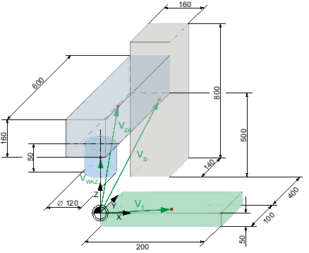
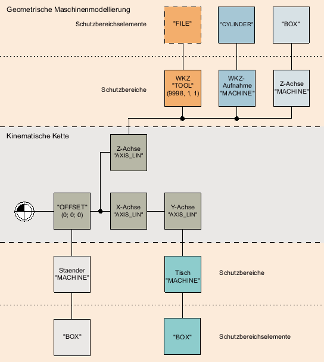

Das nachstehende Beispiel enthält die Maschinenmodell-Elemente einer einfachen 3-Achs-Fräsmaschine für eine vereinfachte kinematische Kette.
Für das Beispiel der 3-Achs-Fräsmaschine sind folgende Elemente definiert:
Element | Farbe | Bewegungsrichtung |
|---|---|---|
Tisch | grün | X, Y |
Z-Achse | grau | Z |
Ständer | grau | keine |
Werkzeugaufnahme | blau | Z |
Werkzeug (wenn eingesetzt) | rot | Z |
Maschinennullpunkt | keine | keine |
Jedes Maschinenmodell-Element hat eine vorgegebene Geometrie und vom Maschinennullpunkt ausgehend einen Offsetvektor zum Elementmittelpunkt:
Für das Beispiel der 3-Achs-Fräsmaschine sind folgende Offsetvektoren definiert:
Element | Offsetvektor |
|---|---|
Werkzeugaufnahme | VWKZ = (0; 0; 25) |
Z-Achse | VZA = (0; 200; 130) |
Ständer | VS = (0; 570; 350) |
Tisch | VT = (100; 50; -25) |
Die kinematische Kette beginnt mit dem ersten kinematischen Element Offset, das den Maschinennullpunkt wiedergibt. Die weiteren kinematischen Elemente bilden die Linearachsen X, Y und parallel Z. Mit den Schutzbereichen werden die Grundkörper der Maschine und Werkzeuge definiert. Die bewegten Schutzbereiche sind mit der entsprechenden Linearachse verknüpft, der unbewegte Schutzbereich mit dem Offset.
